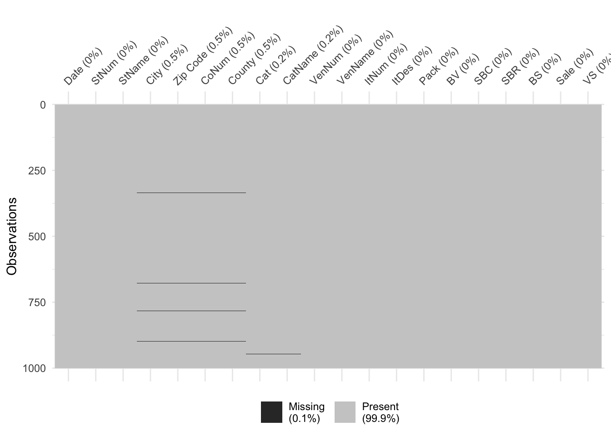
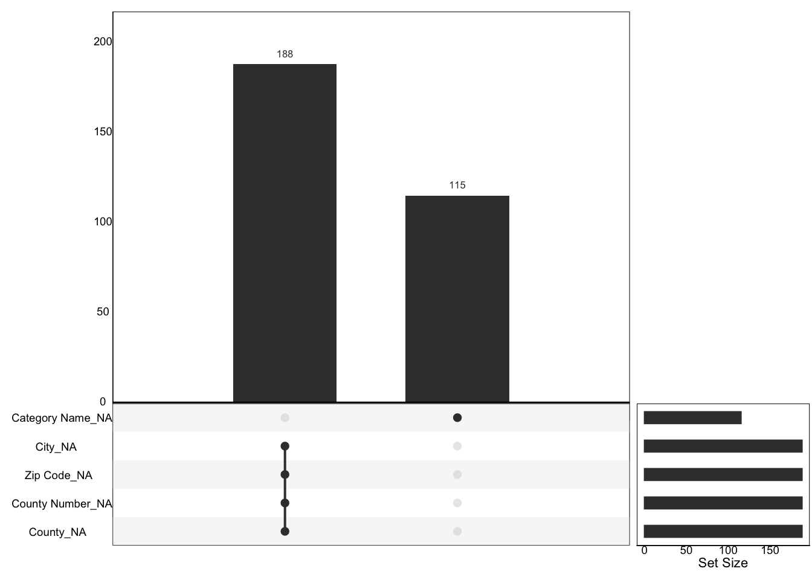

Chapter 3 Data
3.1 Sources
(Describe the data sources: who is responsible for collecting the data? How is it collected? If there were a choice of options, explain how you chose. (It’s ok if there some repetition with the previous chapter. Chapter 2 will reflect your thinking at the time of the proposal and Chapter 3 will represent the state of the project when it is complete.)
Provide some basic information about the data: types of variables, number of records, etc.
Describe any issues / problems with the data, either known or that you discover.)
(suggested: approximately 1 page)
In this 2019 Iowa Liquor Sales dataset,](https://data.iowa.gov/Sales-Distribution/2019-Iowa-Liquor-Sales/38x4-vs5h),) there are very few missing values. There are as many as 24 attributes, which include Date of consumption, Store Name, Category Name, Vendor name and more, detailing every single alcohol consumption. In addition, this dataset is rich in Catigorical Data as well as Numerical Data, and we can use as many kinds of charts as possible to explore the data in the subsequent analysis.
The dataset was collected from grocery stores, liquor stores, convenience stores and so on which has Class E liquor license. If we encounter some questions, we can simply submit contact request form in Iowa government website. How to use the data? We can export it as csv file and import to Rstudio. The dataset consists of 2.38 million points with 24 columns. In this particular project, we will discard the identification information such as “Invoice Number”, “Store Adress”, “Item Number”, etc.
3.2 Cleaning / transformation
(Describe the process of getting the data into a form in which you could work with it in R if relevant. If your code does not lend itself to being including in the .Rmd file, provide a link to the folder or file(s) that contain(s) that code. (If your data did not require any cleaning or transformation before beginning EDA simply state that.))
(suggested: approximately 1/2 page)
Since the source data file size is too large, the source file is over 500MB, which exceeds the limit of GitHub upload, we first used Python to randomly sample one-tenth of the data as the research data for this project.
Second, we eliminated some redundant column data according to the need of the study.
To better present the pattern of missing values on the graph, we rename the column of the data.
3.3 Missing value analysis
Describe any patterns you discover in missing values. If no values are missing, graphs should still be included showing that.
(suggested: 2 graphs plus commentary)
To explore the presence of missing values, we first coun how many missing values exist for each attribute.
## City Zip Code County Number County Category
## 188 188 188 188 115
## Category Name Bottles Sold State Bottle Cost State Bottle Retail Volume Sold (Gallons)
## 115 7 1 1 1
## Date Store Number Store Name Vendor Number Vendor Name
## 0 0 0 0 0
## Item Number Item Description Pack Bottle Volume (ml) Sale (Dollars)
## 0 0 0 0 0

We directly delete the data with missing values.